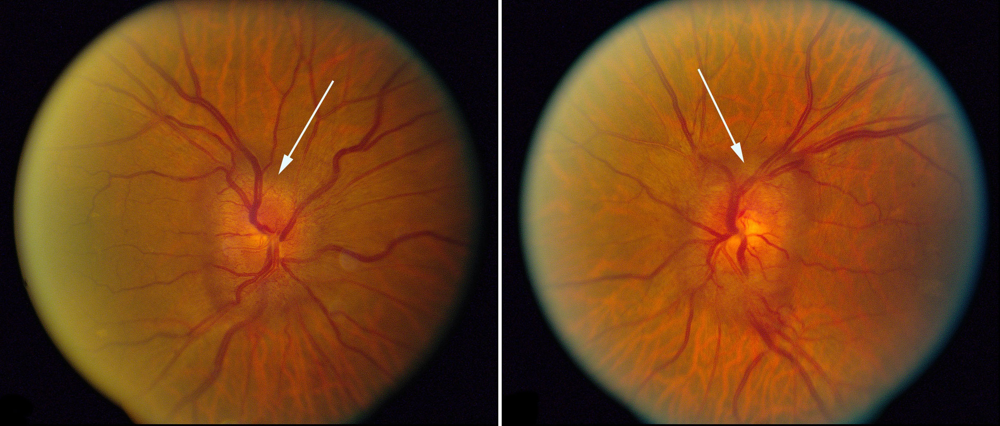

Diabetic Papillopathy

- Acquired elevation of the optic disc in one eye or both eyes in patients with diabetes mellitus Type 1 or Type 2
- Pathogenesis is unknown, but may be mild, chronic, reversible optic disc ischemia  
- Visual dysfunction is usually mild, causing confusion with papilledema, especially when both optic discs are affected
- Usually eventually resolves, but often endures for many months
- No effective treatment
- Patient is often visually asymptomatic
- Hyperemic swelling of one optic disc or both
- Visual acuity is often normal and visual fields show only mild nerve fiber bundle visual field loss
- Pupils are often normal, although an afferent pupil defect may rarely be present
- Diabetic retinopathy need not be present
- Orbit/brain MRI shows no contributory abnormalities

- Papilledema
-
Trap: diabetic papillopathy is difficult to distinguish from papilledema, as both conditions are binocularly symmetric with relative preservation of visual function
- Non-arteritic ischemic optic neuropathy
- Typical optic neuritis
- Atypical optic neuritis
- Infiltrative optic neuropathy
- Hypertensive optic disc edema
- Perform MRI
- If MRI is normal, lumbar puncture may be necessary to exclude increased intracranial pressure and chronic meningitis
-
Trap: this condition is difficult to distinguish from papilledema, which is also binocularly symmetric and causes only mild visual dysfunction
- Optic fundus and visual field abnormalities remain stable for months and then spontaneously resolve